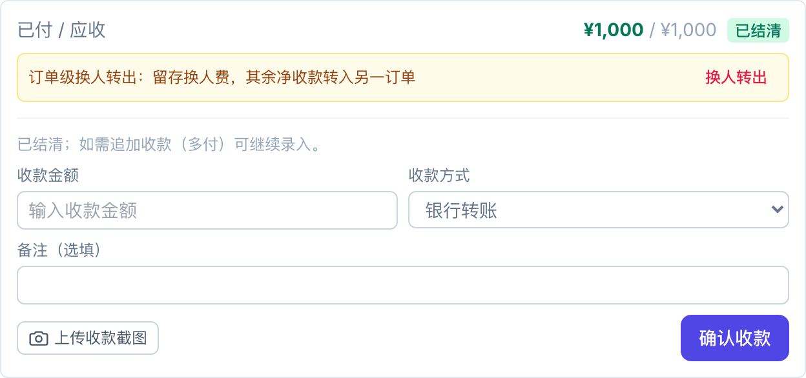
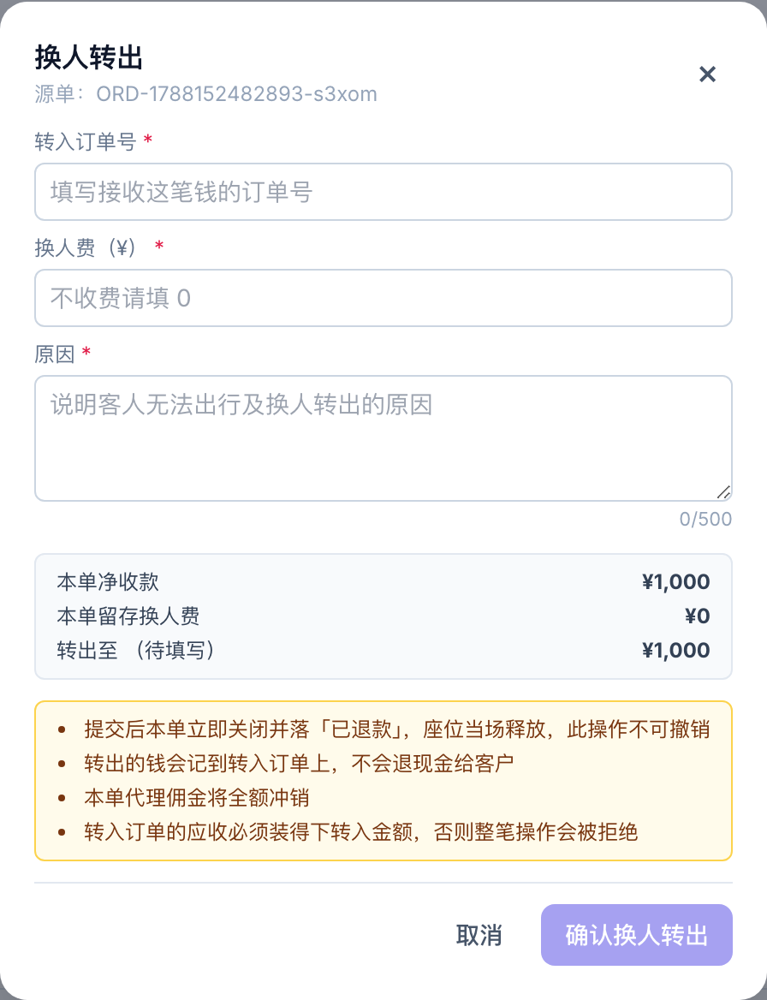
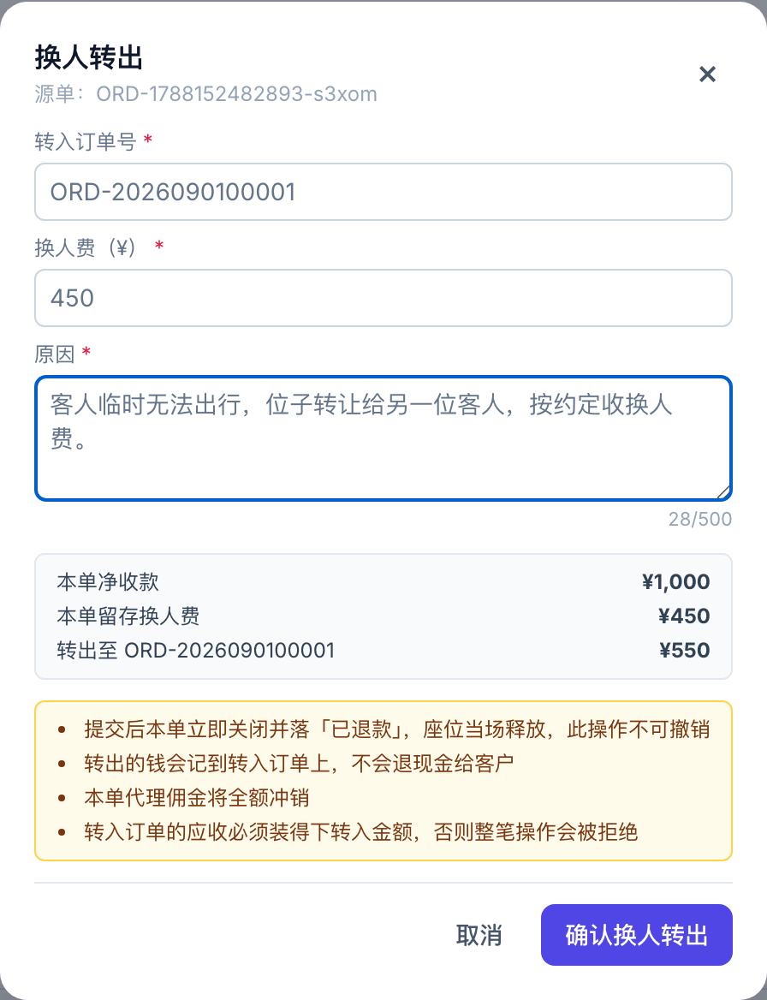
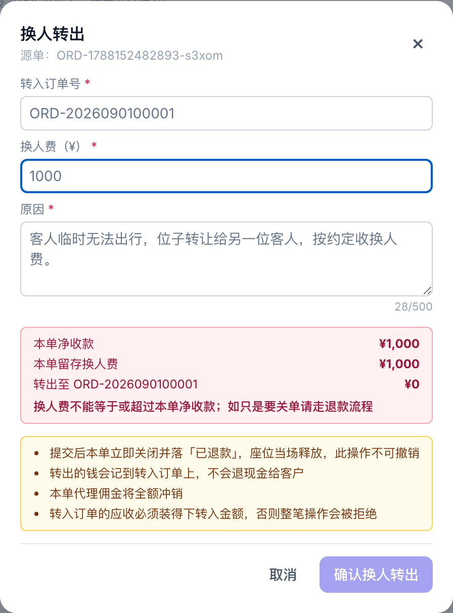

客人临时去不了、位子转让给别人时怎么在系统里走 · 2026-09-01
就是之前说的那个情况。客人下了单也付了钱，临时告诉你去不了，让你帮忙把位子代卖出去。找到接手的人之后，他按当天的价另开一张全新的单。
为什么不能直接在原单上把名字改掉——因为新客人多半不是同一个价，甚至可能不是同一个代理，硬套在原单上两边的账都是歪的。所以就是两张单：原单关掉留换人费，新单正常录。
订单详情里往下拉到付款情况，已付 / 应收那张卡片下面有一条黄色的提示，右边就是换人转出。

付款卡片里的换人转出入口
要是这个按钮点不动，鼠标停在上面它会告诉你为什么，一般就是这单已经取消了、退过款了，或者这单根本没收到钱。

刚打开的样子
| 填什么 | 说明 |
|---|---|
| 转入订单号 | 钱要转到哪张单，填新客人那张单的单号。 |
| 换人费 | 这次收多少，直接填数字。每单可以不一样，不收就填 0。 |
| 原因 | 写清楚是怎么回事，这句话会同时留在两张单的备注里，以后谁来查都看得到。 |
填的时候它会当场把账算给你看。比如这单净收一千、换人费填四百五，它就显示这单留四百五、转出五百五十到那张单。

填好之后的样子，三行数字自己会跟着变
数字对了再点确认，还会再问你一次。
拿上面那单举例，原单收了一千，换人费四百五：
| 原单状态 | 已退款（单子还在，能查到） |
| 原单座位 | 当场放出来 |
| 原单这一单的收入 | ¥450，就是那笔换人费 |
| 转到新单上的钱 | ¥550 |
| 要不要退现金给客人 | 不用，钱直接记到新单上了 |
原单显示已退款，但钱并没有真的退出去，是转到新单上了。所以财务不用去打这笔款——退款记录里会写明白这笔已经转进哪张单、不要再打款。
下面这几种它会直接拦住，屏幕上会告诉你为什么、该去哪儿弄，照着提示走就行。
| 情况 | 怎么办 |
|---|---|
| 换人费填得跟净收一样多，或者更多 | 那就没钱可转了，这种情况直接走退款，别走这条路。 |
| 新单的应收装不下要转的钱 | 先把新单的价改对，再回来转。 |
| 这单用过代理的预存余额抵扣 | 走不了这条路，走退款。余额那边是另一本账，混着走会出问题。 |
| 这单已经有一笔退款申请挂着 | 先把那笔退款处理完。 |
| 这单的收款被财务锁了 | 让财务先解锁。 |
| 新单已经取消 / 已退款 | 钱不能转进一张死单，换一张或者先恢复。 |

换人费填成跟净收一样多，整块标红、确认按钮点不动
转过去的那笔钱在新单上是一条正常的收款记录，但不能单独撤销。因为原单已经关掉了、账也封了，一旦把新单这笔撤掉，这笔钱两边都找不着。真要退，得整体重新处理，找技术。
两张单的备注里都会自动留一行，写清楚哪天、转了多少、跟哪张单对着的、什么原因。以后对账翻出来能看明白。
这个功能只有运营和管理员能用，代理自己看不到。
世途旅行 · 运营控制台 | 换人转出操作说明 | 2026-09-01 | 文中金额与单号为演示数据